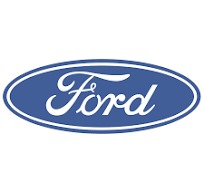

Ford Models

Ford Kuga
The Ford Kuga is a compact SUV produced by the American automobile manufacturer Ford. Here is some general information about the Ford Kuga:
General:
The Ford Kuga was initially introduced in 2008 and since then, it has seen several updates and developments.
It belongs to the compact SUV category, positioned between the Ford EcoSport and the Ford Edge in Ford's SUV range.
Motors:
The Kuga is offered with different engine options, including petrol and diesel engines.
Some models may also be available in hybrid or plug-in hybrid versions, depending on the years of manufacture.
Technologies and Security:
Like many modern vehicles, the Ford Kuga is equipped with many advanced technological features. This can include infotainment systems, active and passive safety, as well as assisted driving features.

Ford Puma
The Ford Puma is a car model manufactured by the American automobile manufacturer Ford. Here is some general information about the Ford Puma:
First generation (1997-2002): The first generation of the Ford Puma was produced from 1997 to 2002. It was a small three-door hatchback sports car, based on the platform of the Ford Fiesta. It was appreciated for its sporty design and agile performance.
Second generation (2019 - present): The Ford Puma was relaunched in 2019 as a compact crossover. Unlike the previous version, the new Puma is a subcompact SUV rather than a sports car. It shares its platform with the Ford Fiesta.
Design and Features: The current Ford Puma features a modern design with dynamic lines and SUV features such as raised ground clearance and a taller driving position. It also offers various technological features, including advanced safety systems and connectivity options.
Engines: The Puma is offered with various engine options, including EcoBoost gasoline engines offering a combination of power and fuel efficiency. The transmission can be manual or automatic depending on the configuration chosen.

Ford Ranger
The Ford Ranger is a mid-size pickup truck produced by Ford Motor Company. Here is some general information about the Ford Ranger:
History: The Ford Ranger was initially introduced to the market in 1983 in North America and has seen several generations since then.
Models: The Ranger is available in various configurations, including single cabs, bunk cabs and crew cabs. It is offered with different engine, transmission and trim level options.
Engines: Ford Ranger engines vary by region and generation, but often include gasoline and diesel engines. Some models can also be equipped with turbo engines.
Transmission: Rangers are offered with manual or automatic transmissions, as well as all-wheel or two-wheel drive systems, depending on the model and owner preference.

Ford Transit Custom
In 1965, Ford launched the Ford Transit line of vans, which became one of the most popular utility vehicle series in the world. The Ford Transit Custom is a specific version of the Transit range, offering customization options to meet specific customer needs.
Here is some general information about the Ford Transit Custom:
Design and Dimensions:
The Ford Transit Custom is available in different configurations, including van, double cabin and Kombi (passenger transport).
Dimensions vary depending on configuration, but in general, the Transit Custom offers generous cargo space while being easy to maneuver.
Engines and Performance:
It is equipped with various engines, including diesel and gasoline engines, providing a balance between power and fuel efficiency.
The transmission can be manual or automatic, depending on the model and customer preferences.
Technology and Comfort:
Newer models typically come equipped with a range of technology features, such as touchscreens, navigation systems, Bluetooth connections and connectivity options.
Comfort features often include air conditioning, adjustable seats, and convenient features for drivers.

Ford GT
The Ford GT is a premium sports car produced by the American automobile manufacturer Ford. Here is some information about the Ford GT:
History: The Ford GT was initially produced in 2005-2006 as a modern reinterpretation of the 1960s Ford GT40, which won the 24 Hours of Le Mans four times.
Second generation: A second generation of the Ford GT was launched in 2017 to celebrate the 50th anniversary of Ford's victory at the 24 Hours of Le Mans in 1966. This version is produced in limited quantities.
Aerodynamic Design: The Ford GT is renowned for its exceptional aerodynamic design, with features such as gullwing doors, carbon fiber bodywork and active vents to improve aerodynamic performance.
Engine: The car is equipped with a 3.5-liter twin-turbo V6 EcoBoost engine, developing impressive power. Power varies depending on the version, but it generally exceeds 600 horsepower.
Performance: The Ford GT is an extremely high-performance car, capable of reaching high speeds and competing with other renowned sports cars on the racetrack.